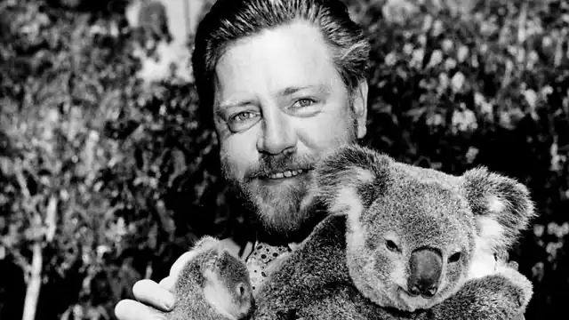
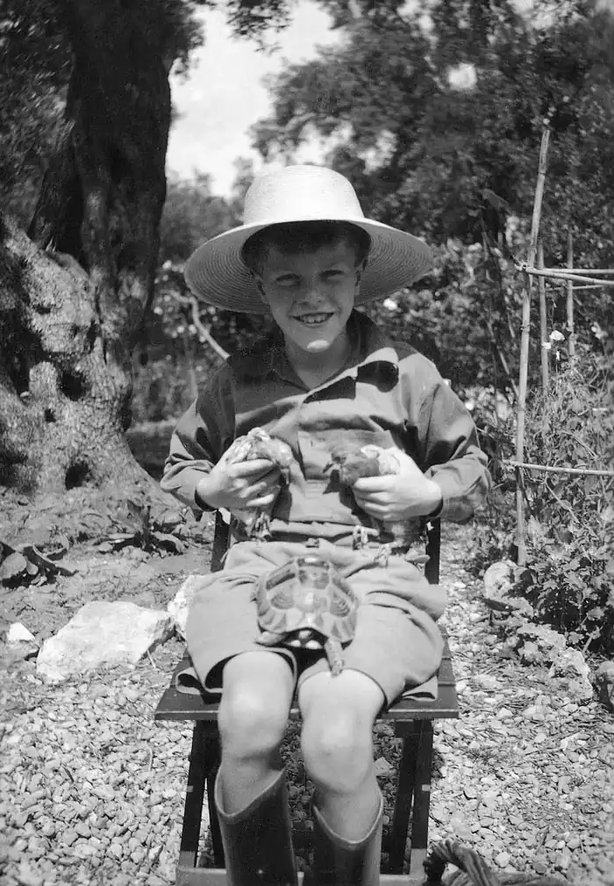

ДЖЕРАЛЬД ДАРРЕЛ
(1925-1995)
Джеральд Малколм Даррел відомий як письменник, а за професією він зоолог-звіролов. Народився в 1925 році в місті Джамшедпурі, в Індії. У 1928 році його сім'я повернулася до Англії, потім у 1933 році переїхала на континент, а 1935 року оселилася на острові Корфу. Тут зародилась у Джеральда, тоді десятилітнього підлітка, любов до тварин. Він наповнив будинок своїми чотириногими й пернатими вихованцями, вступаючи в нескінченні конфлікти з близькими родичами, які протестували проти того, щоб з ними поряд жили жаби, змії, пацюки та ворони. Джеральд зрозумів, що більшість людей не вміють "бачити" тварину, збагнув, що їх цьому треба вчити. Але зробити це можна тільки знайшовши відповідні слова. Джеральд Даррел знайшов їх. Він навчився захоплювати людей своїм ентузіазмом, і саме тоді склався світогляд Даррелла, що його він згодом послідовно пропагував в усіх своїх книжках: все живе прекрасне! У світі немає тварин-ізгоїв! Вони всі мають право на життя! Переслідувати їх, винищувати — злочинно! Після закінчення коледжу Джеральд Даррел іде на роботу в зоопарк Уіпснейд. Однак робота в зоопарку старого типу його не тішила. Він мріяв побачити тварин у їх рідній стихії, на волі. І ось у 1947 році починається новий етап у житті Даррелла — йому запропонували організувати експедицію до Західної Африки, до Камеруну. Офіційна мета експедиції — відлов диких, переважно рідкісних тварин для зоопарків. Однак для самого Даррелла експедиція ця була лише приводом. Головне він бачив у тому, щоб познайомитися ближче з найбагатшим тваринним світом Тропічної Африки, на власні очі побачити звірів і птахів цієї дивної країни. Результати експедиції перевершили сподівання. Поїздка до Західної Африки справила на Даррелла таке сильне враження, що після повернення до Європи він відчуває потребу розповісти про неї. Так з'явилася його перша літературна спроба, невеличка книжка "Перевантажений ковчег". Книжка мала колосальний успіх — її продали за кілька днів. Вона відразу й назавжди зробила молодого незнайомого зоолога загальним улюбленцем, знаменитістю, показала, що в ньому закладено непересічний талант письменника. Уже в ній Джеральд Даррел створив свій власний стиль, цілком завершений і незвичайно привабливий. Поїздка до Камеруну була не єдиною. У 1948 році Даррел здійснив другу експедицію до Африки, потім їде до Британської Гвіани, потім до Парагваю, Аргентини, знову до Африки. З кожної поїздки, окрім колекцій живих тварин, Даррел привозить багато нових вражень, котрі не зостаються мертвим надбанням: за "Перевантаженим ковчегом" з'являються "Гончі Бафуту", потім "Під покровом п'яного лісу", "Земля шурхотів", "Зоопарк у моєму багажі", "Мої зустрічі з тваринами". І з кожною новою книжкою щодалі більше він стає популярним. Потім Джеральд Даррел вирішує заснувати свій власний зоопарк. Після тривалих, але невдалих пошуків йому нарешті щастить узяти в оренду невелику ділянку землі на острові Джерсі й розмістити на ній перші клітки та вольєри. Так народився новий зоопарк. У цей час Даррел починає все більш уваги приділяти долі тварин, їхньому майбутньому, яке в середині XX століття було забарвлене в похмурі кольори. Багато тварин опинилися на межі загибелі, повного знищення. Він мріє перетворити зоопарк на особливий центр, де б розводили рідкісні види тварин. Даррел був одним із перших, хто повірив у необхідність таких центрів, хто намагався втілити теорію на практиці, хто головним завданням свого зоопарку вважав створення резерву тварин, які розмножуються і належать до рідкісних і зникаючих видів. Власне кажучи, всі книжки Джеральда Даррела присвячені цьому завданню — змусити людину по-новому поглянути на природу, на істот, які населяють нашу планету, змусити полюбити їх і чимось поступитися заради їхнього спасіння, заради того, щоб зберегти Землю в усій її красі й багатстві. У Даррелла, який освоїв новий жанр творів про природу, тварин, немає суперників. У чому причини такого успіху? Це дух книжок, а крім нього — майстерність письменника: здатність незвичайно тонко бачити основну сутність природи незнайомої країни, помічати найхарактерніші її риси поряд з умінням знаходити дивовижно вірні, нові, нестандартні, інколи зовсім незвичайні засоби відтворення своїх вражень і переживань роблять оповідання Даррелла легкими, живими й об'ємними. У нього щасливо поєднується уміння бачити й уміння розповісти, а в цьому й полягає справжній талант. Головні герої всіх книжок Джеральда Даррелла — тварини: звірі, птахи, змії, жаби. Серед них немає некрасивих, і тому для кожного зі своїх годованців він знаходить теплі слова. І саме цьому образи тварин такі суто індивідуальні і такі до сліз зворушливі. Вони запам'ятовуються так, ніби ти сам їх бачив, сам піклувався про них, сам любив. Неможливо не наголосити ще на одній особливості творчості Даррелла: на його незрівнянному гуморі. Гумор Даррелла — справді англійський гумор, доброзичливий, спокійний, але тонкий і всюдисущий, гумор не як самоціль, а як життєва філософія, як спосіб зосередитися на чомусь найбільш типовому або найбільш важливому, як спосіб боротьби з труднощами. Гумористичне сприйняття всього, що не стосується трагічної долі тварин, становить одну з найпривабливіших рис характеру Даррелла. Книжки Джеральда Даррелла мають величезну пізнавальну цінність. Мов би мимохідь він ухитряється розповісти про життя тварин так багато, що професійному зоологу майже нічого додати. І всі ці відомості абсолютно вірогідні, далекі від претензій на сенсаційність. У те, що пише Даррел, можна вірити без вагань. Міжнародна спільнота високо оцінила заслуги Даррелла в галузі охорони тварин. У 1983 році Всесвітній фонд охорони природи присвоїв йому звання командора ордена "Золотий ковчег" — це виключно почесна нагорода, яка є свідченням міжнародного визнання. Немає сумніву, що Джеральд Даррел її справді заслуговує. "Перевантажений ковчег" — перший твір Даррелла; "Гончі Бафуту"— продовження, розповідь про другу поїздку до Західної Африки, до Камеруну. Багато років минуло з тих пір, як Джеральд Даррел мандрував тропічним лісом і трав'янистими рівнинами Камеруну. Багато трапилося подій, Камерун діждався довгоочікуваної свободи, в країні розбудовують нове життя сини тих, хто супроводжував Даррелла під час мандрів. Але такими ж чудовими залишилися незаймані ліси, і так само дзвенить в них ночами хор комах і деревних жаб, а лемури гапаго не поспішаючи стрибають з гілки на гілку. Молода республіка багато уваги приділяє питанням охорони природи, тварин, і в цьому є доля заслуги Джеральда Даррела. "Три квитки до Едвенчера" — одна з ранніх книжок Джеральда Даррела: вона була написана після поїздки до Британської Гвіани. У той період Даррел ще так гостро не відчував небезпеки, що насувалася на тварин, а тому ці мотиви в книжці не звучать. Вона цілком присвячена враженням від нової країни, від зустрічі з новими тваринами, радості спілкування з ними. Книжка "Шлях кенгуреняти" — свого роду звіт про поїздку Джеральда Даррела до Нової Зеландії, Австралії й Малайї. У ній автор особливо багато уваги приділяє питанням охорони природи, не забуваючи при цьому про портрети тварин і нариси про ці країни. Даррел іронічно ставився до своєї творчості, хоча він визнавав, що кожна книжка, написана про тварин, змушує людей по-іншому до них ставитися і стає засобом захисту й збереження світу тварин. ОСНОВНІ ТВОРИ: "Перевантажений ковчег", "Гончі Бафуту", "Під пологом п'яного лісу", "Земля шурхотів", "Зоопарк у моєму багажі", "Мої зустрічі з тваринами", "Три квитки до Едвенчера", "Шлях кенгуреняти". ЛІТЕРАТУРА: 1. Даррелл Д. М. Моя семья и другие звери.— М., 1992; 2. Даррелл Д. М. Перегруженный ковчег.— М.,1992.